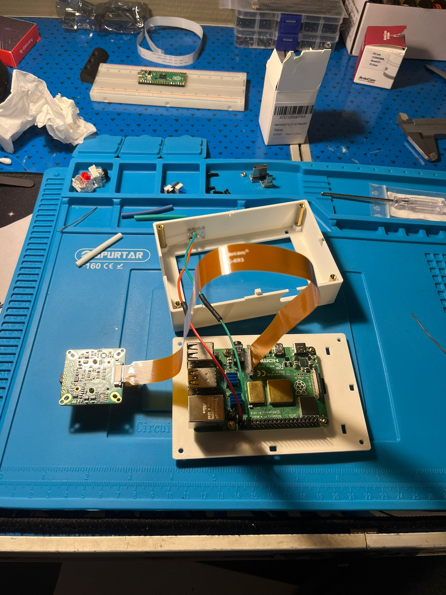
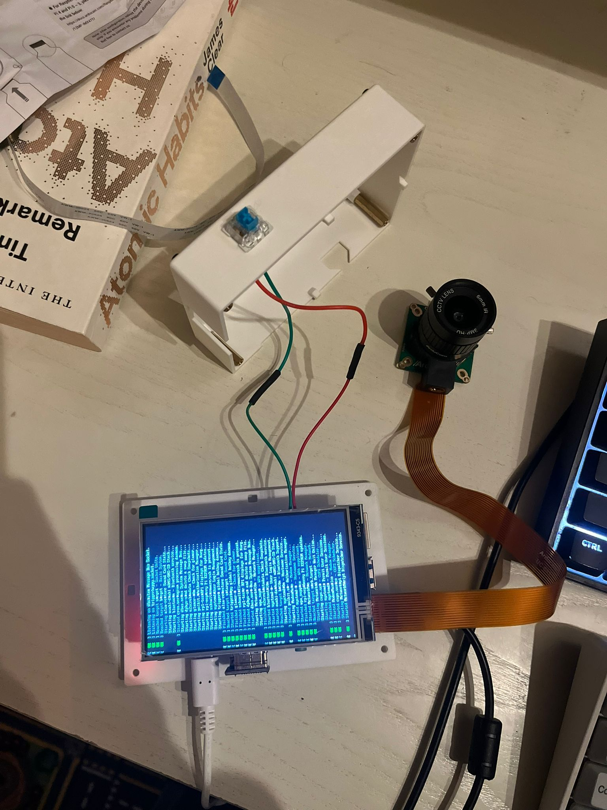
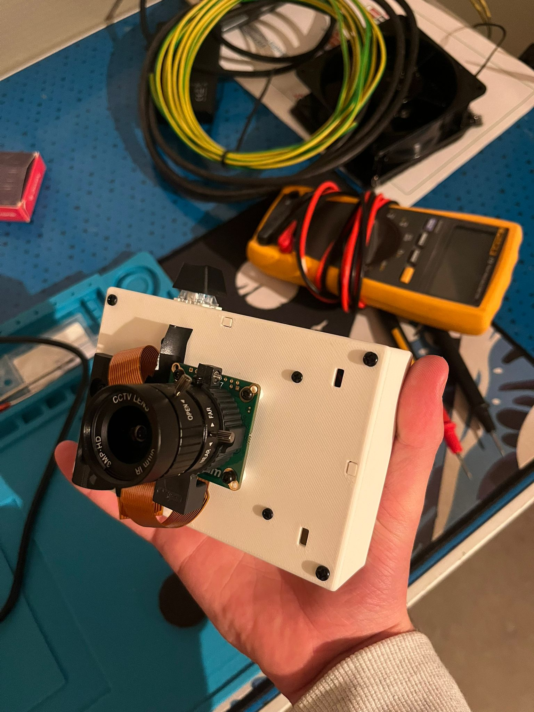
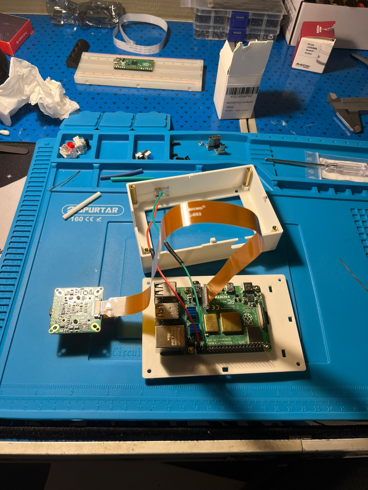
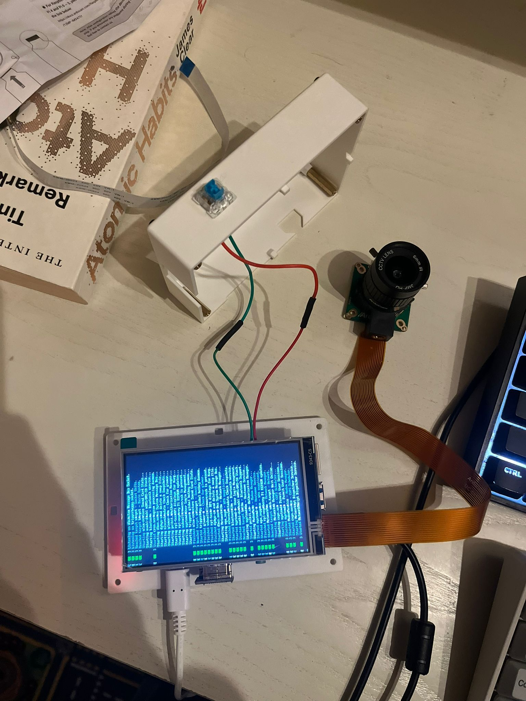
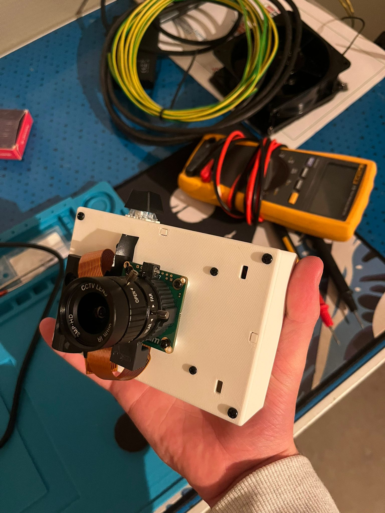

Project C.
Update – 2025: A simple DIY camera built with a
Raspberry Pi 4, a Pi Camera, and a cheap display from Amazon.
It’s not fancy, not polished, but honestly one of my favorite
projects so far.
Intro
This is basically just a photo camera. No cloud, no AI, no smart features. It just takes photos when you press a button.
I wrote a small script in Python using Thonny, connected a Raspberry Pi Camera, added a small inexpensive display, and that’s it. But somehow… it turned out way cooler than I expected.
Why I Built It
I saw a lot of people online building similar Raspberry Pi cameras, but almost all of them needed a keyboard connected to trigger the photo.
To me, that completely killed the experience. Carrying a keyboard around just to take a picture felt wrong.
I wanted something that actually feels like a real camera. Press a button → take a photo.
The Button
Instead of using a keyboard, I soldered a mechanical keyboard switch directly to the GPIO pins of the Raspberry Pi.
That clicky mechanical switch is incredibly satisfying. Pressing it and instantly hearing the camera trigger never gets old.
It’s a tiny detail, but it completely changes how the project feels.
How It Works
- Raspberry Pi 4
- Raspberry Pi Camera Module
- 6mm camera lens
- Cheap Amazon display
- Python script written in Thonny
- Mechanical keyboard switch wired to GPIO
The script listens for a GPIO input. When the button is pressed, it captures a photo and saves it. No menus, no UI, no distractions.
Photo Quality
What surprised me the most is how sharp the photos actually are. For such a simple setup, the image quality is way better than I expected.
It proves that you don’t need a complex setup to get good results.
Final Thoughts
This project isn’t meant to compete with real cameras. It’s just
something I built because I thought it would be cool. If you want to
check out my script for the button check it here.
https://github.com/Maiiicooo/RaspPIcamera
And honestly? It really is.
Pressing a physical button, hearing that click, and knowing the photo was taken by something you built yourself is incredibly satisfying.
— Maico Minne
 




